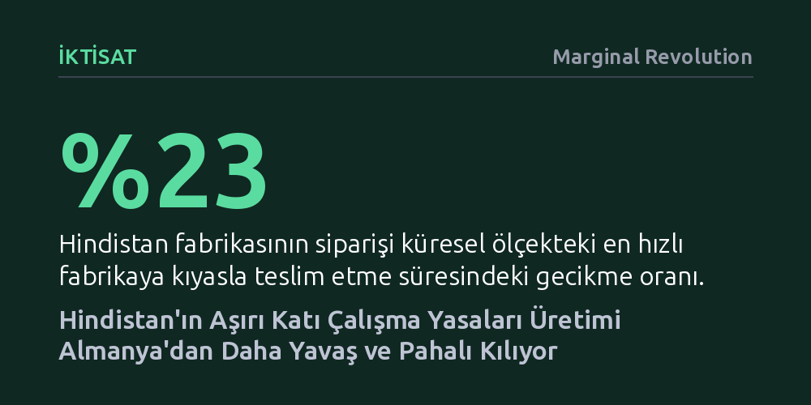

IKTISAT · Marginal Revolution · 2026-10-17
Hindistan'ın haftalık çalışma ve fazla mesai kuralları, sanılanın aksine Almanya'dan bile daha katı bir yapıya sahip. Mevzuatın getirdiği bu esneklik eksikliği, eşit şartlar altında Hindistan'daki bir fabrikanın üretimini küresel rakiplerinden yüzde 23 daha yavaş ve yüzde 18 daha maliyetli kılıyor.
Gelişmekte olan ülkelerdeki sanayileşme krizinin temelinde sadece teknoloji veya sermaye kıtlığının değil, zengin ülkeleri aşan yersiz mevzuat katılığının da yatabileceğini gösteriyor.

Hindistan gibi gelişmekte olan ülkelerin sanayileşme sürecinde karşılaştığı temel engeller genellikle sermaye yetersizliği, zayıf altyapı ya da niteliksiz işgücü olarak kabul edilir. Ancak son dönemde yapılan iktisadi araştırmalar çok daha yapısal ve beklenmedik bir darboğazı gözler önüne seriyor: Gelişmiş ülkelerden bile daha katı bir işgücü mevzuatı. Anand, Chandra ve Pradeep tarafından hazırlanan çalışma, Hindistan'daki çalışma saatleri düzenlemelerinin Avrupa'nın sanayi devi Almanya'dan çok daha kısıtlayıcı olduğunu ortaya koyuyor.
Bu tablo, iktisatçı Shruti Rajagopalan ile Alex Tabarrok'un "erken taklit" olarak adlandırdığı kavramın somut bir örneği. Devlet kapasitesi oldukça zayıf olan bir ülke, gelişmiş ekonomilerin ancak zenginleştikten sonra yürürlüğe koyduğu standartları erkenden bünyesine katmaya çalışıyor. Üstelik Hindistan örneğinde durum salt bir taklidin de ötesine geçiyor; ülke, esinlendiği zengin ülkelerden çok daha sert kurallar koyarak kendi imalat sanayisini küresel rekabette peşinen dezavantajlı duruma düşürüyor.
Kağıt üzerinde her iki ülkede de standart iş günü sekiz saat olarak belirlenmiş durumda. Ancak kuralların uygulama mekanizmasına bakıldığında iki sistemin felsefesi taban tabana zıt işliyor. Hindistan'da fazla mesai yapan her işçiye normal saatlik ücretinin tam iki katı (2x) ödenmesi yasal bir zorunluluk. Çoğu gelişmiş ülkede bu oran 1,5 kat seviyesinde tutulurken, Almanya'da yasayla belirlenmiş zorunlu bir fazla mesai zam katsayısı dahi bulunmuyor; bu oran tamamen sendikal pazarlıklara ve iş sözleşmelerine bırakılıyor.
Asıl belirleyici fark ise fazla mesai saatlerinin esnekliğinde ortaya çıkıyor. Hindistan, işçi başına üç aylık bir çeyrekte en fazla 144 saat fazla mesai sınırı uyguluyor ve her çalışma haftasını birbirinden bağımsız katı bir tavanla sınırlıyor. Almanya ise toplam çalışma süresini günde ortalama 10, haftada ise ortalama 48 saat ile sınırlandırıyor. Buradaki anahtar kavram "ortalama". Almanya'da işverenler altı aylık bir dönem içinde haftalar arasında saat kaydırması yapabiliyor; yoğun dönemlerdeki uzun haftalar, sonraki sakin haftalarla telafi edildiği sürece yasal sayılıyor. Hindistan'daki katı haftalık tavanlar ise ani ve mevsimsel sipariş patlamalarına hızlı yanıt vermeyi imkânsızlaştırıyor.
Bu mevzuat farkının faturasını somutlaştırmak amacıyla 16 ülkede, tek vardiyayla çalışan 500 işçili varsayımsal bir elektronik fabrikası modeli kuruluyor. Eylül ayındaki yeni bir iPhone lansmanı öncesinde her fabrikaya üç ayda tamamlanmak üzere 10.000 cihazlık sipariş verildiği varsayılıyor. Deneyde tüm fabrikaların teknoloji, işçi verimliliği ve ücret seviyeleri eşit kabul ediliyor; böylece geriye kalan tek değişken ülkelerin çalışma saatlerine dair mevzuatı oluyor.
Simülasyon sonuçları çarpıcı bir gerçeği belgeliyor: Hindistan'daki fabrika siparişi ancak 13,7 haftada bitirebiliyor ve bu süre en hızlı fabrikaya kıyasla yüzde 23 daha uzun. Hindistanlı üretici normal çalışma saatlerini haftalar arasında kaydıramadığı için tempoyu artıramıyor ve hızlanabilmesinin tek yolu yasal tavanı olan fazla mesaiye başvurmak oluyor.
Maliyet tarafında da tablo değişmiyor. Hindistan fabrikası siparişi tamamlayabilmek için birim başına 49,3 işgücü-saati ödemek zorunda kalıyor; bu da en düşük maliyetli öncü fabrikalardan en az yüzde 18 daha yüksek bir gidere işaret ediyor. İşçi başına gereken 800 üretim saatinin 144 saati iki kat zamlı ödendiğinde, işveren 800 saatlik fiili çıktı için 985 saatlik ücret ödüyor. Bu durum, ücretlerin ve verimliliğin eşit varsayıldığı bir senaryoda dahi Almanya'da iPhone üretmenin Hindistan'dan daha ucuz ve daha hızlı olduğunu gösteriyor.
Hindistan'daki işletmelerin bu katı kurallar altında nasıl ayakta kaldığı sorusu, ülkenin yapısal açmazını özetliyor. Uygulamada yerel ve küçük ölçekli firmalar denetimsizlik sayesinde bu kuralları kolayca baypas ediyor; işçilerle kayıt dışı uzlaşmalar yaparak yasal engelleri fiilen hükümsüz kılıyor. Ancak devlet kapasitesinin düşüklüğü nedeniyle kuralların delinmesi bir çözüm üretmiyor.
Çünkü Hindistan'ın asıl ihtiyacı, sanayileşmeyi ve istihdamı sıçratacak Foxconn gibi dev uluslararası üreticileri ülkeye çekmek. Küçük yerli atölyelerin aksine küresel kurumsal şirketler, uluslararası denetimler ve itibar riski nedeniyle yasalara harfi harfine uymak zorunda. Sonuç olarak kağıt üzerindeki aşırı katı mevzuat, yerel kayıt dışılığı beslerken tam da ülkenin çekmek istediği büyük ölçekli ve kurumsal yabancı yatırımları kapıdan geri çeviriyor.